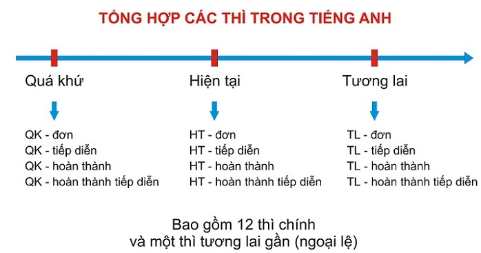

- Tenses
- Structures
- Irregular verbs
Trong tiếng Anh có tất cả 12 thì cơ bản với các các sử dụng và dấu hiêu nhận biết khác nhau. Dưới đây là tổng hợp công thức thành lập, Dấu hiệu nhận biết và cách sử dụng 12 thì này để các bạn dễ dàng phân biệt và nắm rõ.
